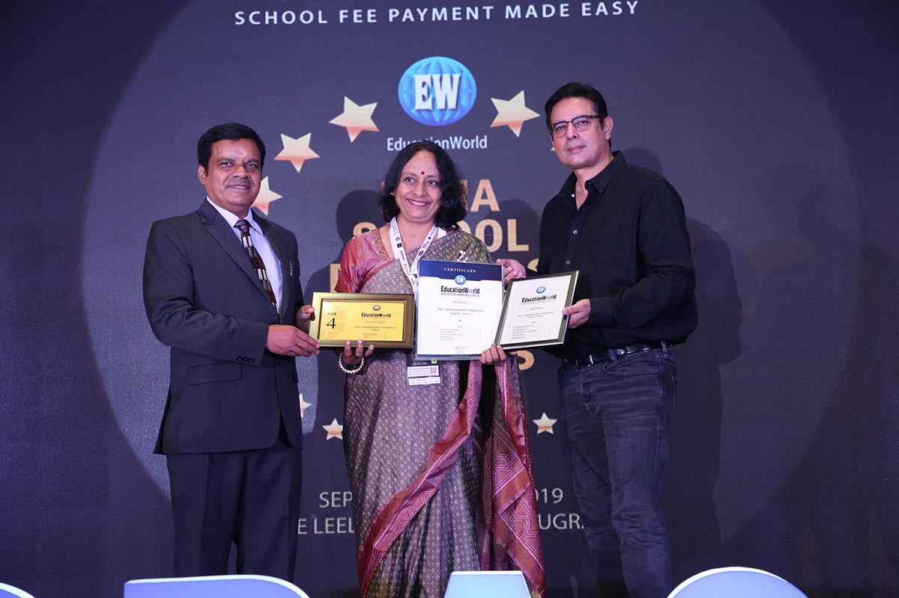

Acheivments
International School Award

The International School Award
Smt.Sulochanadevi Singhania School won the International School Award in 2019.
Best School
umbnail">
The Best School
Smt.Sulochanadevi Singhania School is ranked 1st in Maharashtra and is ranked 1st for value of money